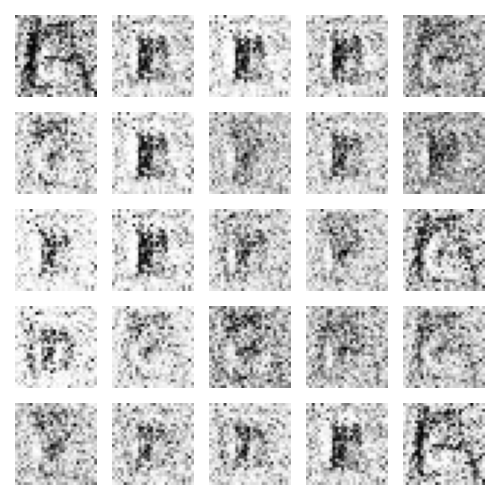

Using Generative Adversarial Networks to Imitate My Handwriting

Introduction
I wanted to learn more about neural networks recently, and so I was reading up to see what was new in the field. I was familiar with the classical applications of neural networks: image classification, natural language processing, game AIs, and so forth. While the specific type and implementation varied, the premise for the most part was a black box that is fed some input in the form of raw data and would choose from a corresponding set of possible outputs the most likely one based on some internal parameters. Granted, this definition does not do justice to the complexity involved in image classification or natural language processing, but this was my mental image of neural networks at the time.
Then, I read this paper by Wen, Singh, and Raj and I was immediately flabbergasted. Using just two data points (an image of a face and the corresponding voice), they were able to train a model that would reconstruct the face of a test subject from just their voice. It's difficult to quantify their results, but data would not do this justice. Take a look at how closely their machine-created images resemble the actual profiles. Immediately after being flabbergasted, I wanted to do this myself, so I read up a bit on the subject.
Machine Learning and especially Neural Networks are dense subjects and it's understandibly difficult to begin learning about them. As a complete beginner to actually building neural nets, I wanted to share my process of tackling this challenge to hopefully make the learning curve a little less steep for you.
The Challenge
As suggested in the introduction, I want to build a neural network that would create data rather than classify it. Generative Adversarial Networks are incredibly successful at generating accurate fake data with small datasets and are quite recent, having been pionered in 2014 by Ian Goodfellow and his colleagues.
There are a plethora of data sets available on the internet for textual, image, or audio data. I could use one of these, but I want to make something personal, so I needed to create the data as well. I also want this to be something that anyone can simply download from github and run, so I needed to create some infrastructure to acquire and parse the data as well. With all that said, the question still remains: what data do I want to generate?. I need to choose some relatively small data. The larger the data, the harder it is to store, the longer it takes to parse, and the more computational power is required for the neural network to run. To understand the last reason, consider two inputs: a string of text of length 100 (around 100 bytes in 8-bit ASCII encoding), versus a 1 minute long HD video shot at 60 fps (around 150-200 MB). In the first example, in order for our neural network to "understand" the input, we can assign one node (I will talk about this in more detail below) to each character, so the model can "understand" the data with about 100 nodes. In the case of the video, in order for the model to capture all the data points, we would expect to need one node for each pixel of each frame. Without going into the arithmetic, this would be a massive amount of nodes, meaning a massive amount of internal parameters that need fine-tuning.
Ordinary text seems too boring and video or large images will burden the neural network. So I settled on handwritting samples captured as extremely low resolution 28x28 grayscale images. This decision was inspired by the MNIST database, which is a large database of handwritten digits often used in neural net tutorials.
The Model
I figure I should begin with a brief introduction to Neural Networks, although I do suggest watching 3 Blue 1 Brown's video series.
The simplest Neural Network is a perceptron. It works through several input nodes each managing one "aspect" of the input data. Each of these nodes are connected to a single output node by an imaginary edge that carries a weight. The program calculates the sum of the products of each node and its respective edge and uses that value as the input to some activation function f(x), which is the output of the neural net.

I'll talk about activation functions in a bit, but first I should talk about how a neural net actually trains. If the weights and nodes are static, then the network would give the same output no matter how much it had learned, so instead neural networks employ optimization strategies that gradually adjust the "knobs" until the output is as closed to the desired output as possible. This "difference" is refered to as the loss function and the neural network works by optimizing such that the loss function is minimized (i.e. the difference between the desired output and the actual output is as small as possible). Without going into too much math, most neural networks use an optimization algorithm known as gradient descent which works by estimating the gradient (or the slope) of the loss function with respect to some weight w, and gradually updating the value of w such that the gradient of L(w) is as close to 0 as possible (this would signify that a minimum has been reached). This is far from the whole story, but if you're curious into how gradient descent is applied, read about backpropagation.
The shift from a perceptron to a general neural network is quite simple. The perceptron contains just a single layer, consisting of the input nodes. In a general neural network, there may be multiple layers, and each of the non-input layers are referred to as "hidden" since the values of each of those nodes are quite unimportant since they are just intermediates.
Everything else remains the same: the value of each node in the hidden layers is calculated by applying the activation function to the sum of the product of every node and weight in the previous layer, and these values are optimized in the exact same way. Now, for a brief discussion on activation functions.
As you can expect, the sum of the products of every node and weight can become quite unwieldy especially with deep neural networks. To solve this issue and improve the convergence speed (the effectiveness of gradient descent), neural networks try to normalize the value of each node in the hidden and output layers to a value between -1 and 1 using an activation function. We'll discuss the benefits and drawbacks to specific activation functions a bit later, but to give you a few preliminary examples, the hyperbolic tangent function tanh, the binary step function, and the sigmoid function are commonly used.
Now, for the fun part: GANs. Generative Adversarial Networks work by playing a game between two separate neural networks. On the one side, we have the generator that generates "fake" inputs. Then, we have the discriminator which tries to differentiate between real and fake inputs. Both these models are trained and in doing so, the generator becomes increasingly better at producing fake inputs. The natural question here is why not just make slight modifications to the input. Well, for one, that's no fun. And the second reason is that generators can produce fake inputs that are remarkably similar to the "trend" of real inputs, but remarkably different from any one real input.
For instance, there is not much to be gained in taking an image of a face and slightly modifying a few pixels. But GANs have been shown to create entirely new faces that look exactly like one would expect a face to look like, but different in multiple aspects from any other face in the input database.
Creating the GAN
To create GANs, neural networks in general, and even Machine Learning more generally, Python leads the pack. The countless libraries for data processing such as NumPy and SciPy, combined with data visualization libraries such as matplotlib and Machine Learning libraries such as Scikit-learn and Tensorflow make your life incredibly easy. This is quite nice, but in a way it's a drawback when first learning these topics. These libraries abstract machine learning so much that a beginner can go about never learning the nitty gritty of what they're implementing by following some YouTube tutorial or cloning someone's github repo. Ultimately, creating a neural network from scratch, especially one as complex as a GAN, would be incredibly mechanical and would likely not result in the performance we need (python libraries as massively optimized). So I settled on a compromise: I'll use ML libraries, but I'll also ensure to understand the bare bones of my program.
With that out of the way, let's talk about the implementation. The entire neural net is constructing using Keras, which allows us to easily construct neural nets by stacking layers (I referenced this article when implementing my neural network to familiarize myself with the syntax of Keras). First, we construct the discriminator. The first layer simply has 1 node for every pixel of the image. Then, we have 3 hidden layers followed by an output layer of one node that outputs a value between 0 and 1. We want to train the discriminator so that a value of 1 represents a real image and a value of 0 represents a fake image.
Next, we train the generator to take in some random noise (we need random noise or the GAN's output will be constant, while we want it to produce many different outputs). We choose a gaussian distribution to choose the random noise from, but your distribution shouldn't really matter all too much. We layer the generator with three hidden layers followed by an output layer with one node corresponding to each of 784 pixels. Initially, the generator will simply output white noise, but as we train it through the feedback loop with the discriminator, it will learn to imitate the real images more and more.
For our activation functions, we primarily use the leaky rectified linear unit. There are a few problems with the sigmoid and hyperbolic tan functions which makes them difficult to implement in a GAN such as the vanishing gradient problem and low sensitivity to extreme values. There is considerable research done on these activation functions and quite honestly I don't fully understand why LeakyReLU works better than its counterparts so I might come back and vary this parameter a bit to see if we can produce good results with other activation functions.
There are some other parts of the GAN that we won't get into as of right now, such as what optimization function we use, dropouts, how many epochs we choose to train, what batch size we use, the slope of our LeakyReLU, or the learning rate of our optimizer. These are integral to how our neural net performs, but in the interest of time, I can't experiment with these parameters too much.
Creating the Input Interface
Now that we have developed the GAN, we need to feed it with some data to do its job. The simplest way to get standardized handwriting images is to have the user draw on their computer itself. Without going into the specifics of what libraries I used (the code can be found on the github link), we can write a program with python that allows a user to draw characters on a blank canvas. Then, we compress the image to a grayscale 28x28 image and save the image in some subdirectory. Now when we initialize the GAN, it will simply read all the images and parse them into a numpy array. Of course this array will contain values from 0 through to 255, so we normalize all the pixels to between -1 and 1 to make our life and computation easier.
Putting It All Together
I spent about 10 minutes adding some samples to work with, and got in 112. Now, this is no where near the number of samples used in the MNIST database (60000), and so I'm not expecting great results. I chose a batch size of 16, meaning that the model will be retrained after every 16 inputs. Here are the results:
|
Original |
||
|
1 Epoch |
5 Epochs |
10 Epochs |
|
25 Epochs |
50 Epochs |
100 Epochs |
Overall, I'm excited about the results. For the first 25 or so epochs (one epoch is equivalent to training through the entire dataset), there was not much visible improvement. There was darkening in the center of the image, which we expect, and the generator seemed to produce a pattern: a diagonal line. After 50 epochs, the figures are more distinguishable and the image is less noisy. Then, after 100 epochs, we get some near-letters. The fourth from the left in the bottom row looks clearly like an 'I' and the fourth from the left in the second from the bottom row looks like a 'T'. We also see some interesting non-letter shapes. The inverted 'E' and flipped 'T' show up.
Stochastic Gradient Descent
I want to experiment with Stochastic Gradient Descent, which is when a gradient descent algorithm is used on a batch size of just 1. In practical terms, this means we retrain the model after every image. SGD is known to cause more randomness, since it retrains after every image, whether the discriminator worked appropriately or not. You can think of this as running an experiment on very small sample sizes. Here are the results:
|
Original |
||
|  | ||
|
1 Epoch |
5 Epochs |
10 Epochs |
|
25 Epochs |
50 Epochs |
100 Epochs |
I think the hypothesis that SGD produces more randomness is fairly plausible based on these results. The models seems to 'train' faster. After 1 epoch, there is a defined 'O', but the fact that all images are similar suggest that SGD ends up ignoring a lot of training data. After 25 epochs, we see fairly defined features, but no actual letters. After 100 epochs, we see some pretty interesting results. The model can replicate 'I' decently(which makes sense since the pattern is quite linear when flattened to a 1-D array), but apart from a couple other letter lookalikes, the other images are quite scrambled. Going forward, I like aspects from both SGD and the mini-batch training with a batch-size of 16, so I'm going to reduce the batch-size to 8.
Batch Normalization
Batch normalization is the idea to reduce variance in different inputs in a batch and is supposed to improve learning rate. I was slightly dissapointed, but the results are interesting nevertheless:
|
Original |
||
|
1 Epoch |
5 Epochs |
10 Epochs |
|
25 Epochs |
50 Epochs |
100 Epochs |
The net recognizes the whitespace quite well, but the figure itself is quite jumbled and pixelated. I'm not sure if my implementation is incorrect, but it could also be how finicky neural nets are. With so many parameters, it's possible that I was learning too fast/slow, or maybe applying normalization to the wrong layers. I halved the learning rate, and removed batch normalization from the discriminator, since the generator loss seemed to be better when the normalization was not in the discriminator. I also extended the length to 1000 epochs so we could get a glimpse of how the net performed in the long run.
|
Original |
||

|
||
|
1 Epoch |
5 Epochs |
25 Epochs |
|
100 Epochs |
250 Epochs |
1000 Epochs |
This time, we didn't have the same 'noisy' effect present in the last image. I think this is partly due to the slowed learning rate. I find that when the learning rate is higher, the generator loss generally increases at a faster rate, signifying that the discriminator is stronger than the generator. When the generator is unable to 'fool' the discriminator, it continues to produce white noise. The batch normalization seems to cause this as well, so it order to balance both out, I decreased the learning rate and it seemed to work quite well. One thing to note that is quite interesting is what figures are being drawn. We see a lot of 'F's, 'l's, 'i's, 't's, and 'T's. This makes intuitive sense since these are some of the simplest alphabets to draw and also, by extension, the simplest alphabets to imitate. But it also has a drawback, since our model's output diversity does not match the input diversity. This problem is known as 'mode collapse' and happens when the generator selects for the easiest outputs.
I'm going to end this article here for now, but I'll be back soon to add changes.